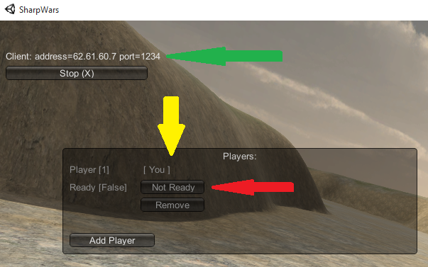

Witaj użytkowniku
W tym miejscu znajdują się pożyteczne informacje związane z właściwą częścią gry SharpWars. Znajdziesz tu jedną z najważniejszych rzeczy, czyli instrukcję uruchomienia gry. Musisz wziąść pod uwagę fakt, iż gra nie jest jeszcze w finalnym stadium. Znajduje się w niej dużo błędów czy tymczasowych modeli. Interfejs też nie powala na kolana, są to niestety domyślne komponenty udostępnione nam przez silnik Unity.
Ważne informacje
Aktualnie nie możliwa jest rozgrywka za pośrednictwem sieci LAN. Webserwis bazuje na zewnętrznym adresie IP, które w przypadku rozgrywki lokalnej jest błędne. Jeżeli chcesz grać w sieci LAN, musisz wpisać adres IP serwera ręcznie. Patrz punkt GRA->KLIENT-> 1. zielona strzałka.
Instrukcja obsługi
Przygotowanie
- Wypakuj paczkę z grą
- Wygeneruj instalator wpisu do rejestru za pomocą GenerujInstalator.bat
-
Zainstaluj wygenerowany wpis do rejestru systemu (InstalujProtokol.reg)
Po zainstalowaniu, nie zmieniaj położenia folderu z grą inaczej nie będzie działać. -
Upewnij się że masz wgrany
Microsoft Visual C++ Redistributable 2012, jeśli nie masz skorzystaj z vcredist_x86.exe
Webserwis
- Zakładamy konto na http://eti.endrius.tk
- Logujemy się do portalu
- Zakładamy grę w "Aktywne gry"
- Tworzymy drugie konto w innej przeglądarce lub trybie incognito
- Logujemy się drugim kontem
- Dołączamy do założonej gry
- Zmieniamy statusy gotowości
- Master/Host/Twórca lobby klika Start i rozpoczyna się część związana z grą właściwą
- Jeżeli gra została prawidłowo zainstalowana, przeglądarka powinna wyświetlić komunikat o uruchomieniu obcej aplikacji. Co jest zupełnie naturalną sytuacją
Gra
- Wybieramy interesującą nas rozdzielczość ekranu, zaznaczamy tryb Windowed i klikamy Play
-
Host
- Jeżeli to my byliśmy Hostem/Twórcą lobby to klikany na opcję LAN Host (H). Patrz czerwona strzałka.
-
W spisie graczy widzimy siebie oraz widzimy nasz port gry i tryb. Patrz czerwona strzałka.
Teraz oczekujemy na pozostałych graczy. -
Gdy pozostali gracze dołączyli i zmienili swój stan na Ready[True]. Patrz niebieska strzałka.
Sami możemy zmienić swój stan na Ready (czerwona strzałka) i gra autoamtycznie się rozpocznie.
Klient
-
Jeżeli jesteśmy klientem to klikany na opcję LAN Client (C). Patrz zielona strzałka.
IP które znajduje się obok powinno zawierać prawidłowe IP serwera. Uzupełniane automatycznie podczas startu aplikacji. - Gdy uda nam się połączyć z serwerem, co zauważymy po wpisanym IP serwera oraz porcie. Patrz zielona strzałka.
- Będziemy widzieć siebie (żółta strzałka) oraz pozostałych uczestników na liście graczy.
- Gdy jesteśmy gotowi zmieniamy swój stan na Ready klikając przycisk Not Ready (czerwona strzałka)
- Przycisk zmieni się w napis Ready oznaczając nasz stan. Można kliknąć go znowu aby zmienić stan na Not Ready
- Gdy ostatni z graczy zmieni swój stan na Ready - gra automatycznie wystartuje 
Dokument wyskrobał
- Urban Patryk - programista mający doświadczenie zarówno w tematyce wysokopoziomowej jak i niskopoziomowej w każdej technologii.